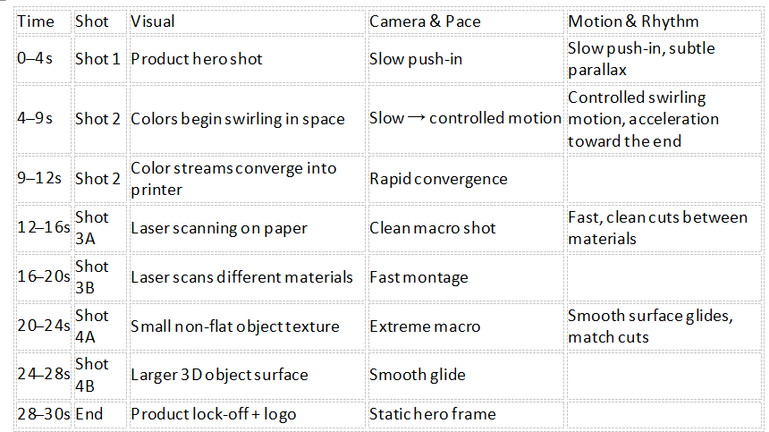

← 部落格 × Harbour × ETC


第 1 周
团队成员
Yiqi Zheng（特效）
Riley Ho（特效）
Itim Kongsakulvatanasook（特效）
Sofia Mancias（合成）
1 月 10 日
Benji Hopkins（外观开发）
SCAD × HARBOR × ETC － 第 1 周
大家好，这是我 SCAD × Harbor × ETC 部落格的第一周！
我们提出了六个感兴趣的产品，最后决定聚焦在 3D 纹理 UV 印表机，因为它代表一项新兴的技术。
目的：
探索先进的列印技术如何成为想像与现实之间的桥梁，把数位创意转化为实体。
元素：
UV 印表机（eufyMake）：这是我们的主角物件
流动的色彩漩涡：象征抽象的创意逐渐成形，同时强调真实的色彩还原。
列印出的纹理：列印过程的实体成果，展现数位设计如何变成可触摸的表面。
材质：各种真实世界的表面，展示印表机的多样性与实用性。
我们先定义镜头，讨论后决定做四个镜头。每位组员再依照自己的理解与视觉诠释画出粗略的分镜。以下是我们讨论的结果。
-
镜头 1：展示产品
-
镜头 2：色彩旋绕并流进印表机
-
镜头 3：展示在各种材质上的列印过程
-
镜头 4：从小到大的非平面物件特写，突显表面纹理

镜头 1
镜头 2
AI 生成
镜头 3
镜头 4
极微距镜头：雷射扫过有纹理的表面，
在斜射光下呈现细致的材质细节。（类似这样的镜头角度）
在不同材质的极微距镜头之间硬切，
以连续的雷射动作维持视觉流畅。
这是我们的镜头拆解。
这些是我流体模拟的参考。
这是 Itim 做的第一版布局。
-
继续调整摄影机运动。
-
做流体漩涡与流体模拟的简单测试。